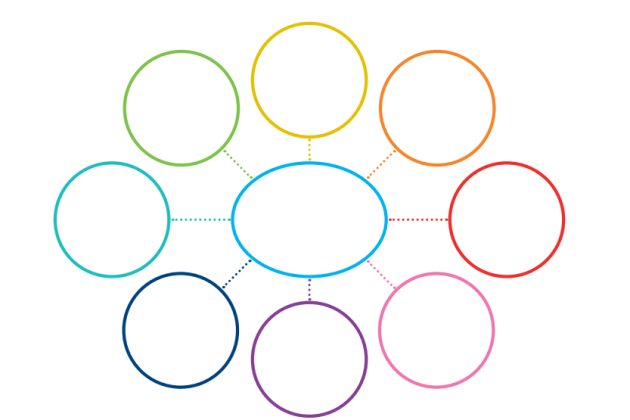
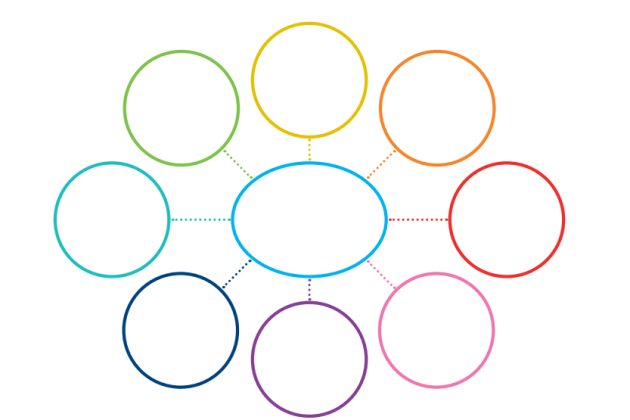

Welcher Weg Wann und Wie
Eine Einleitung, wozu ist diese Seite da?
Hier kommt eine Mindmap hin! Die kann man anklicken und zu den Seiten gelangen :]
Eine Einleitung, wozu ist diese Seite da?
Hier kommt eine Mindmap hin! Die kann man anklicken und zu den Seiten gelangen :]
